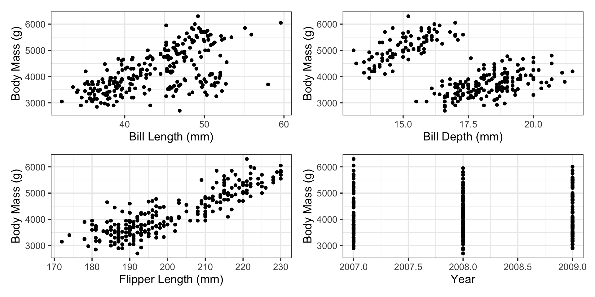
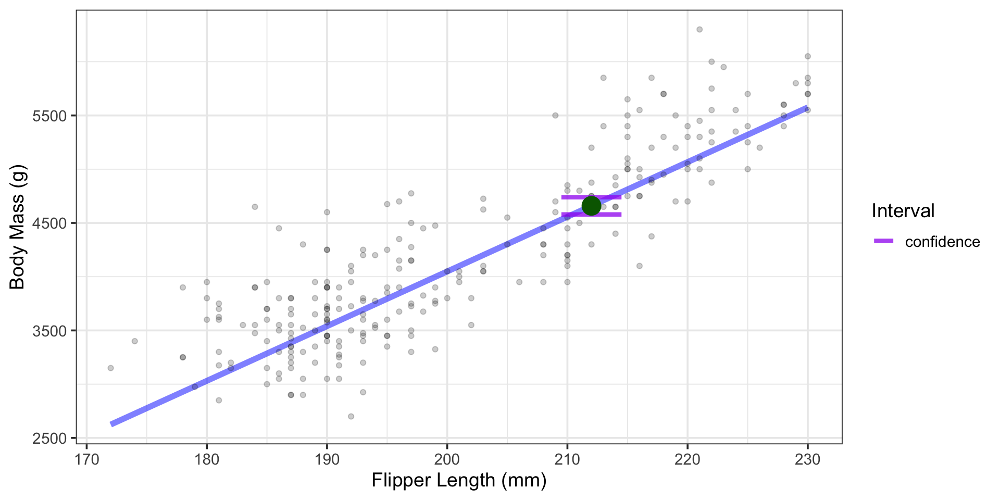

Multiple Linear Regression: Construction, Assessment, and Interpretation
August 27, 2024
The Highlights
What is Multiple Linear Regression?
What are we assuming?
Tests for Model Utility
- Global tests for model utility
- Individual term-based tests
Further model assessment
- Validation metrics
- Residual analysis
Model interpretation
Predictions
If all this seems nearly identical to our discussion on simple linear regression models, it is.
Playing Along
- Open the notebook that contains your simple linear regression model for predicting used car prices
- Run all of the code in that notebook
- Add a section to that notebook on multiple linear regression models
What is Multiple Linear Regression?
Why choose just one predictor when we could have them all?
What is Multiple Linear Regression?
\[\begin{align} \mathbb{E}\left[\text{body mass}\right] = \beta_0 + &\beta_1\cdot\left(\text{bill length}\right) + \beta_2\cdot\left(\text{bill depth}\right) +\\ & \beta_3\cdot\left(\text{flipper length}\right) + \beta_4\cdot\left(\text{year}\right)\end{align}\]
Question 1 (Predictive): Can we use penguin bill length, bill depth, flipper length, and observation year to predict body mass?
Question 2 (Inferential): Controlling for bill length, bill depth, and observation year, what is the association between flipper length and penguin body mass?
Question 3 (Inferential): Controlling for flipper length, bill depth, and observation year, what is the association between bill length and penguin body mass?
Question 4 (Inferential): Controlling for flipper length, bill length, and observation year, what is the association between bill depth and penguin body mass?
Question 5 (Inferential): Controlling for flipper length, bill length, and bill depth, what is the association between observation year and penguin body mass?
Multiple Linear Regression
\(\bigstar\) Let’s try it! \(\bigstar\)
- Write out the form of a possible multiple linear regressor with at least two numerical predictors of car price
- Describe the predictive and inferential tasks that your model addresses
- Write the predictive and inferential questions being asked/answered by your model
What Are We Assuming?
\[\begin{align} \mathbb{E}\left[\text{body mass}\right] = \beta_0 + &\beta_1\cdot\left(\text{bill length}\right) + \beta_2\cdot\left(\text{bill depth}\right) +\\ & \beta_3\cdot\left(\text{flipper length}\right) + \beta_4\cdot\left(\text{year}\right)\end{align}\]
Pre-Modeling Assumptions: Penguin body mass is associated with each of the four predictors in a linear manner, the predictors are not correlated with one another, and body mass is independent of all other possible features.
Post-Modeling Assumptions: The following assumptions are made about model errors (residuals), to ensure that using and interpreting the model is appropriate.
- Residuals are normally distributed
- Residuals are independent of one another, the response, the predictions, and the predictors
- The standard deviation of residuals is constant with respect to the predictor, predictions, and the response
Building a Multiple Linear Regression Model with {tidymodels}
- Create a model specification
- Package the model and recipe into a workflow
- Fit the workflow to the training data
Building a Multiple Linear Regression Model with {tidymodels}
\(\bigstar\) Let’s try it! \(\bigstar\)
- Create the model specification for your multiple linear regressor
- Create the recipe for your model
- Package that model and recipe together into a workflow
- Fit the model to your training data
The Estimated Model
| term | estimate | std.error | statistic | p.value |
|---|---|---|---|---|
| (Intercept) | 232658.774875 | 60591.365347 | 3.8398008 | 0.0001560 |
| flipper_length_mm | 52.753150 | 2.783871 | 18.9495697 | 0.0000000 |
| bill_length_mm | 1.530334 | 5.984567 | 0.2557134 | 0.7983815 |
| bill_depth_mm | 28.587515 | 15.997312 | 1.7870199 | 0.0751409 |
| year | -119.323909 | 30.224297 | -3.9479466 | 0.0001024 |
\[\begin{align} \mathbb{E}\left[\text{body mass}\right] = 232658.77~ + &~52.75\cdot\left(\text{flipper length}\right) + 1.52\cdot\left(\text{bill length}\right) + \\ &~28.59\cdot\left(\text{bill depth}\right) - 119.32\cdot\left(\text{year}\right) \end{align}\]
- Extract the estimated model fit for your multiple linear regressor
- Write down the equation for the estimated model
Global Test for Model Utility
Does our model include any useful information in predicting / explaining penguin body mass?
\[\begin{array}{lcl} H_0 & : & \beta_1 = \beta_2 = \beta_3 = \beta_4 = 0\\ H_a & : & \text{At least one } \beta_i \text{ is non-zero}\end{array}\]
| r.squared | adj.r.squared | sigma | statistic | p.value | df | logLik | AIC | BIC | deviance | df.residual | nobs |
|---|---|---|---|---|---|---|---|---|---|---|---|
| 0.7808404 | 0.7773478 | 387.1782 | 223.571 | 0 | 4 | -1886.198 | 3784.396 | 3805.667 | 37626655 | 251 | 256 |
The \(p\)-value on this test is so small that it rounds to 0.
We’ll reject the null hypothesis and accept that our model contains at least one useful predictor of penguin body mass!
- Write the hypotheses for the global test for model utility for your model
- Obtain the relevant test statistic and \(p\)-value
- Interpret the results
Utility of Model Terms
We’ll run tests \(\begin{array}{lcl} H_0 & : & \beta_i = 0\\ H_a & : & \beta_i \neq 0\end{array}\) to determine whether each individual term has utility.
| term | estimate | std.error | statistic | p.value |
|---|---|---|---|---|
| (Intercept) | 232658.774875 | 60591.365347 | 3.8398008 | 0.0001560 |
| flipper_length_mm | 52.753150 | 2.783871 | 18.9495697 | 0.0000000 |
| bill_length_mm | 1.530334 | 5.984567 | 0.2557134 | 0.7983815 |
| bill_depth_mm | 28.587515 | 15.997312 | 1.7870199 | 0.0751409 |
| year | -119.323909 | 30.224297 | -3.9479466 | 0.0001024 |
At the \(\alpha = 0.05\) level of significance, neither bill_length_mm or bill_depth_mm are significant.
Removing one of the model terms will update all of the values in the model output – including \(p\)-values.
We’ll remove bill_length_mm since it has the largest \(p\)-value and revisit the resulting table.
Updating the Model and Retesting Terms
| term | estimate | std.error | statistic | p.value |
|---|---|---|---|---|
| (Intercept) | 233601.98715 | 60366.73367 | 3.869714 | 0.0001388 |
| flipper_length_mm | 53.21694 | 2.10806 | 25.244509 | 0.0000000 |
| bill_depth_mm | 29.45370 | 15.60556 | 1.887385 | 0.0602578 |
| year | -119.81399 | 30.10749 | -3.979541 | 0.0000903 |
The bill_depth_mm term is still not significant. Let’s remove it as well.
Updating the Model and Retesting Terms
| term | estimate | std.error | statistic | p.value |
|---|---|---|---|---|
| (Intercept) | 227916.26652 | 60596.048460 | 3.76124 | 0.0002101 |
| flipper_length_mm | 50.87429 | 1.712514 | 29.70736 | 0.0000000 |
| year | -116.49701 | 30.207960 | -3.85650 | 0.0001460 |
Now, all remaining terms are significant.
\[\mathbb{E}\left[\text{body mass}\right] = 227916.27 + 50.87\cdot\left(\text{flipper length}\right) - 116.5\cdot\left(\text{year}\right)\]
Term-Based Tests and Model Updates
- Extract the estimated model fit for your multiple linear regressor
- Examine the tests for significance of individual model terms
- If any of your model terms are not significant, remove them one-by-one, using our backward elimination strategy
- Once all remaining model terms are statistically significant, write down the estimated model form
Additional [Training] Performance Metrics
| metric | value |
|---|---|
| r.squared | 0.7776845 |
| adj.r.squared | 0.7759270 |
| sigma | 388.4115769 |
| statistic | 442.5110973 |
| p.value | 0.0000000 |
| df | 2.0000000 |
| logLik | -1888.0281851 |
| AIC | 3784.0563702 |
| BIC | 3798.2370800 |
| deviance | 38168478.9336123 |
| df.residual | 253.0000000 |
| nobs | 256.0000000 |
\(p\)-value is rounded to \(0\), so our resulting model still has some utility in predicting / explaining penguin body mass.
\(R^2_{\text{adj}} \approx 77.6\%\), so approximately 77.6% of variation in penguin body mass is explained by our model.
Training RMSE (
sigma) is about 388.41, so we expect our model to predict penguin body mass to within \(\pm 2\cdot\left(388.41\right) \approx \pm 776.82\) grams.- Recall that we should generally expect this estimate to be too optimistic.
Additional [Training] Performance Metrics
\(\bigstar\) Let’s try it! \(\bigstar\)
- Use
glance()to obtain the global performance metrics for your model - Identify and interpret the \(p\)-value, \(R^2_{\text{adj}}\), and training RMSE values
Additional [Validation] Performance Metrics
| .metric | .estimate |
|---|---|
| rmse | 376.6980462 |
| rsq | 0.7450228 |
\(R^2 \approx 74.5\%\), so approximately 74.5% of variation in penguin body mass is explained by our model, when taking away the training data advantage.
Test RMSE is about 376.7, so we expect our model to predict penguin body mass to within \(\pm 2\cdot\left(376.7\right) \approx \pm 753.4\) grams.
As with our simple linear regression models, the test \(R^2\) value is slightly worse than the corresponding training metric, while the test RMSE is an improvement over the training RMSE.
- Remember, we should generally expect slightly worse performance on the test data than on training data.
Additional [Validation] Performance Metrics
\(\bigstar\) Let’s try it! \(\bigstar\)
- Obtain and interpret the RMSE and \(R^2\) values for your model on the test data
Residual Analysis
Again, some slight right skew in the distribution of residuals and some associations between the residuals and the predictors, predictions, and response.
Residual Analysis
\(\bigstar\) Let’s try it! \(\bigstar\)
Calculate residuals for your model
- You’ll need to add a column of model predictions to your training set
- Then you’ll need to compute the residuals (prediction errors) and hold them in another new column
Use graphical techniques to analyze the residuals for your model
Model Interpretations
| term | estimate | std.error | statistic | p.value |
|---|---|---|---|---|
| (Intercept) | 227916.26652 | 60596.048460 | 3.76124 | 0.0002101 |
| flipper_length_mm | 50.87429 | 1.712514 | 29.70736 | 0.0000000 |
| year | -116.49701 | 30.207960 | -3.85650 | 0.0001460 |
\[\mathbb{E}\left[\text{body mass}\right] \approx 227916.27 + 50.87\cdot\left(\text{flipper length}\right) - 116.5\cdot\left(\text{year}\right)\]
Interpretations:
(Intercept) We expect a penguin from the year 0 and whose flipper length measures 0mm to have a mass of about 227916.27g
- Again, this is not reasonable or supported. The intercept here is meaningless.
(Flipper Length) Holding year constant, we expect a 1mm increase in flipper length to be associated with about a 50.87g increase in penguin body mass, on average.
(Year) Holding flipper length constant, we expect an elapsed year to be associated with about a 116.5g decrease in penguin body mass, on average.
Model Interpretations
\(\bigstar\) Let’s try it! \(\bigstar\)
Extract the estimated model fit for your multiple linear regressor
Write down the equation for the estimated model
Provide interpretations of each of your estimated coefficients
- Is an interpretation of your model’s intercept meaningful?
Using the Model to Make Predictions
Consider the following questions:
- In 2009, what is the body mass of a penguin whose flipper length is 212mm?
- In 2009, what is the average body mass of all penguins whose flipper lengths are 212mm?
As with last time, the answer to the first question requires a prediction interval, while answering the second uses a confidence interval.
The prediction interval will be wider due to the additional uncertainty in predicting the body mass of a single penguin.
Our model predicts
\[\begin{align} \mathbb{E}\left[\text{body mass}\right] &\approx 227916.27 + 50.87\left(212\right) - 116.5\cdot\left(2009\right)\\ &= 4652.21\text{g} \end{align}\]
which we again have 0% confidence in.
Using the Model to Make Predictions
| .pred |
|---|
| 4659.126 |

Using the Model to Make Predictions
\(\bigstar\) Let’s try it! \(\bigstar\)
Identify the characteristics of a car whose price you are interested in predicting
- Formulate these characteristics into a question and add it to your notebook
Use
tibble()to create a new data frame containing the characteristics of that vehicle whose price you wanted to predictUse your model to predict the price of that car
Using the Model to Make Predictions
What is the body mass of a penguin observed in 2009, whose flipper length is 212mm?
| .pred_lower | .pred_upper |
|---|---|
| 3890.01 | 5428.241 |
Using the Model to Make Predictions
\(\bigstar\) Let’s try it! \(\bigstar\)
Update the prediction you just made to obtain a prediction interval rather than a point estimate for the estimated car price
- You may want to keep your original code as well, for comparison and future reference
Interpret the resulting interval
Using the Model to Make Predictions
What is the average body mass of all penguins observed in 2009 and whose flipper lengths were 212mm?

Using the Model to Make Predictions
\(\bigstar\) Let’s try it! \(\bigstar\)
Make another update to obtain a confidence interval for the estimated car price
- Again, you likely want to keep your existing code rather than just edit it
Interpret the resulting interval and compare it to the previous interval you constructed
- Why are the intervals different?
- What is each interval used for?
Using the Model to Make Predictions
What is the body mass of a penguin observed in 2009 with flipper length 212mm?
- Somewhere between 3890g and 5428.2g, with 95% confidence.
What is the average body mass of all penguins observed in 2009 with flipper lengths 212mm?
- Somewhere between 4579g and 4739.2g, with 95% confidence.

Using the Model to Make Predictions

Summary
- Multiple linear regression models are models of the form \(\displaystyle{\mathbb{E}\left[y\right] = \beta_0 + \beta_1 x_1 + \beta_2 x_2 + \cdots + \beta_k x_k}\).
- We assume that none of the predictors are correlated with one another.
- The global test for model utility and the test for significance of each predictor are different in this case.
- In the case of model terms which aren’t significant, we drop one term at a time until all remaining model terms are significant. We drop the term corresponding to the highest \(p\)-value(\(^*\)).
- We further assess multiple linear regression models with summary metrics like \(R^2_{\text{adj}}\), RMSE (both training and testing), as well as residual plots.
- The intercept is the expected response when all predictors take a value of 0, which may not be meaningful or supported.
- The coefficient on each predictor can be interpreted as a slope(\(^*\)).
- We can predict responses for a single observation, or an average over all observations having the same values of the predictors.
Next Time…
Residual Analysis and Model Quality